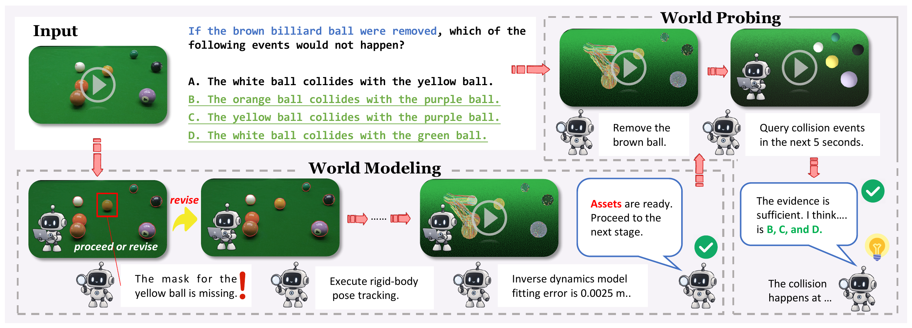
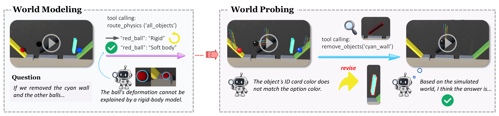
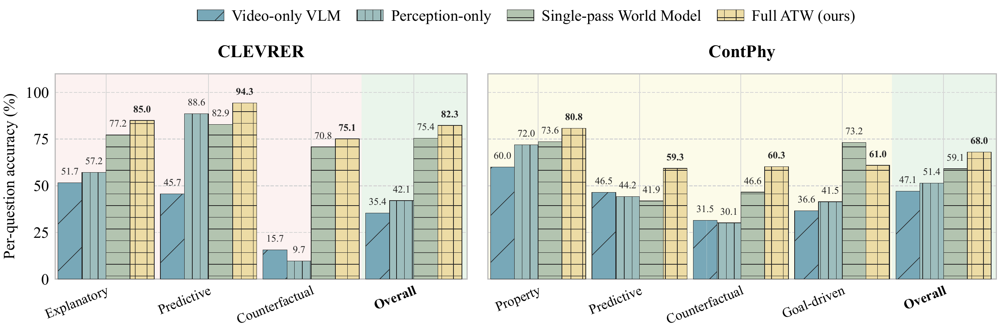

World Modeling
Selects question-relevant entities, recovers geometry and motion, and fits physical parameters. Feedback revises object bindings and physical representations before the agent commits an executable world.
Physical reasoning requires inferring latent properties and dynamics beyond direct observation.
Asking the World (ATW) constructs and interrogates task-relevant executable worlds through adaptive World Modeling and World Probing, determining how to model and probe according to the scene and question.
PolyWorld Engine supports diverse materials and coupled interactions, while system identification recovers task-relevant dynamics. The resulting world becomes an active workspace for question-directed physical experiments, enabling execution-grounded generalist physical reasoning.
Physical reasoning from video requires inferring latent physical properties and dynamics beyond direct observation. Direct VLM inference remains unreliable on complex physical tasks without explicit modeling and validation, while predefined tool pipelines rely on task- and domain-specific priors that limit generalization across materials, dynamics, and reasoning tasks. We introduce Asking the World (ATW), a generalist agent that constructs and interrogates task-relevant executable worlds through two adaptive stages: World Modeling calibrates a world from video, while World Probing queries, simulates, and intervenes on it to obtain question-relevant evidence. Rather than prescribing the operations in either stage, ATW determines how to model and probe according to the scene and question. We develop PolyWorld Engine, a lightweight and highly programmable Warp-based multiphysics simulator for constructing and probing worlds with rigid bodies, soft bodies, cloth, ropes, fluids, and their coupled interactions. CEM-based system identification recovers task-relevant dynamics during World Modeling. The resulting world becomes an active workspace for question-directed physical experiments rather than a predetermined downstream tool. We evaluate ATW on CLEVRER, ContPhy, and three real-world scenarios. Using Gemini-3-Flash as its base VLM, ATW achieves 80.82% overall per-question accuracy on CLEVRER, improving direct Gemini-3-Flash by 46.50 points, GPT-5.5 by 13.58 points, and PhysMind by 8.27 points. On ContPhy, it reaches 70.56% overall accuracy, surpassing Gemini-3-Flash by 28.10 points and GPT-5.5 by 3.53 points. Across the three real-world scenarios, ATW achieves 71.67% accuracy, 28.33 points above GPT-5.5. These results establish agentic world modeling and probing as an effective, execution-grounded approach to generalist physical reasoning.
Loading scene…
ATW constructs and interrogates task-relevant executable worlds through two adaptive stages: World Modeling and World Probing.

Selects question-relevant entities, recovers geometry and motion, and fits physical parameters. Feedback revises object bindings and physical representations before the agent commits an executable world.
Queries properties, simulates trajectories, and tests interventions in the committed world. Execution feedback refines subsequent probes without reopening World Modeling or altering the base world.
80.82%Overall per-question accuracy
CLEVRER · 1,000 validation videos · Accuracy (%)
| Method | Explanatory | Predictive | Counterfactual | Overall | ||||
|---|---|---|---|---|---|---|---|---|
| per ques. | per opt. | per ques. | per opt. | per ques. | per opt. | per ques. | per opt. | |
| Baselines | ||||||||
| Random | 7.19 | 49.33 | 25.40 | 49.71 | 9.75 | 50.02 | 11.26 | 49.69 |
| Blind Gemini-3-Flash | 27.00 | 64.64 | 24.68 | 48.92 | 10.07 | 50.13 | 19.21 | 56.31 |
| Foundation VLMs | ||||||||
| Qwen3-VL-235B-A22B | 53.19 | 75.84 | 40.40 | 62.12 | 22.17 | 61.79 | 37.52 | 67.92 |
| GLM-4.6V | 39.33 | 73.75 | 63.64 | 66.74 | 24.31 | 58.70 | 36.68 | 66.02 |
| Gemini-3-Flash | 50.32 | 74.66 | 42.71 | 53.46 | 16.63 | 58.38 | 34.32 | 64.97 |
| Gemini-3.1-Pro | 60.90 | 79.17 | 61.76 | 71.28 | 25.37 | 63.50 | 45.47 | 71.06 |
| GPT-4o | 36.76 | 70.48 | 35.64 | 54.98 | 15.57 | 56.54 | 27.29 | 62.44 |
| GPT-5.5 | 77.21 | 89.55 | 85.71 | 90.69 | 51.33 | 76.74 | 67.24 | 83.66 |
| Training-Based Methods | ||||||||
| VideoRFT | 16.66 | 61.98 | 39.25 | 47.40 | 15.35 | 54.98 | 19.74 | 57.28 |
| Video-R1 | 32.79 | 71.14 | 41.56 | 46.25 | 19.62 | 59.10 | 28.43 | 63.08 |
| VideoThinker-R1 | 17.53 | 63.60 | 41.56 | 42.50 | 15.14 | 53.71 | 20.37 | 56.92 |
| Chain-of-Frames | 44.71 | 77.26 | 84.42 | 87.88 | 33.48 | 70.84 | 46.21 | 75.29 |
| Training-Free Methods | ||||||||
| VideoAgent | 34.42 | 61.55 | 14.29 | 48.56 | 7.57 | 51.61 | 19.39 | 55.63 |
| STAR | 55.58 | 78.62 | 24.24 | 57.14 | 7.57 | 53.47 | 29.46 | 64.75 |
| PhysMind | 76.97 | 87.38 | 66.96 | 82.32 | 70.58 | 88.08 | 72.55 | 87.22 |
| ATW (Ours) | 83.87 | 92.31 | 88.60 | 91.41 | 75.16 | 90.29 | 80.82 | 91.28 |
70.56%Overall accuracy

ContPhy · 600 videos · 1,950 questions · Accuracy (%)
| Method | Property | Predictive | Counterfactual | Goal-driven | Overall |
|---|---|---|---|---|---|
| Baselines | |||||
| Random | 40.53 | 31.50 | 12.92 | 13.90 | 28.36 |
| Blind Gemini-3-Flash | 47.47 | 41.26 | 23.16 | 29.34 | 37.90 |
| Foundation VLMs | |||||
| Qwen3-VL-235B-A22B | 58.80 | 46.54 | 30.51 | 27.41 | 45.03 |
| Gemini-3-Flash | 60.00 | 43.90 | 23.16 | 22.39 | 42.46 |
| GPT-5.5 | 75.47 | 50.81 | 69.49 | 69.11 | 67.03 |
| Training-Based Methods | |||||
| Video-R1-7B | 43.47 | 34.15 | 11.14 | 15.44 | 29.95 |
| Chain-of-Frames-8B | 50.27 | 48.17 | 10.24 | 20.85 | 36.62 |
| Training-Free Methods | |||||
| ATW (Ours) | 81.73 | 62.20 | 63.03 | 67.18 | 70.56 |
Per-question accuracy (%)
Executable worlds provide substantial gains. Feedback-guided revision adds 6.90 points on CLEVRER and 8.92 on ContPhy over Single-pass World Model.

Gemini-3-Flash · CLEVRER and ContPhy ablation subsets
Stronger search improves the same simulator; a more suitable backend improves reasoning under the same optimizer. Lower fitting error is associated with stronger downstream reasoning.
| Physical configuration | Median RMSE (m) ↓ | Per-question accuracy (%) ↑ |
|---|---|---|
| WarpDefault parameters | 0.292053 | 26.67 |
| WarpRandom Search | 0.034992 | 43.45 |
| PhysMind modelCEM | 0.059138 | 53.56 |
| MuJoCoCEM | 0.016017 | 73.79 |
| Warp + CEM (Ours) | 0.007655 | 82.76 |
CLEVRER ablation subset · CEM and Random Search use equal simulation budgets.
ATW improves over Video-only VLM with both evaluated backbones on CLEVRER and ContPhy.
CLEVRER and ContPhy ablation subsets · Gains in percentage points
@misc{zeng2026askingworld,
title = {Asking the World: Generalist Physical Reasoning through Agentic World Modeling and Probing},
author = {Shenxiang Zeng and Chen Yang and Peiyao Chen and Guohui Zhang and Jiansheng Fan and Chen Wang},
year = {2026},
eprint = {2609.39135},
archivePrefix = {arXiv},
primaryClass = {cs.CV},
url = {https://arxiv.org/abs/2609.39135}
}